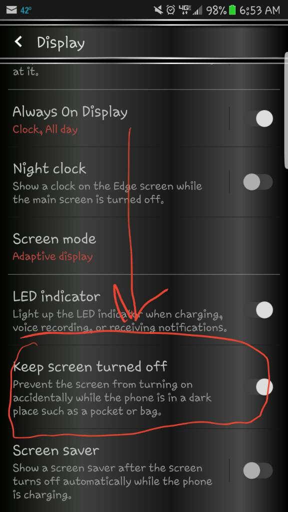

概述
SensorHub 虚拟传感器介绍。
分析
mtk支持的复合传感器如下
chre.mk:
传感器类型 |
类别 |
底层物理传感器 |
报告模式 |
使用场景 |
|---|---|---|---|---|
互动 |
加速度计、陀螺仪 |
单次模式 |
微信摇一摇 |
|
互动 |
加速度计、陀螺仪 |
单次模式 |
快速进入相机拍照 |
|
互动 |
加速度计 |
单次模式 |
拿起手机接听电话 |
|
互动 |
加速度计、陀螺仪 |
单次模式 |
||
互动 |
加速度计、陀螺仪 |
单次模式 |
屏下指纹亮屏 |
|
互动 |
未定义 |
单次模式 |
拿起看时间 |
|
动作传感器 |
近距、光感 |
单次模式 |
手机在口袋里时，自动将来电铃声放至最大 |
|
动作传感器 |
加速度计 |
连续模式 |
自由落体关机 |
|
动作传感器 |
加速度计、陀螺仪（如有） |
单次模式 |
拿起看时间 |
|
互动 |
未定义 |
单次模式 |
拿起亮屏 |
|
动作传感器 |
气压计 |
连续模式 |
统计楼层 |
|
动作传感器 |
加速度计（或其他功耗极低的传感器） |
单次模式 |
判断是运动还是静止状态 |
|
动作传感器 |
加速度计 |
变化时触发模式 |
步数统计 |
|
动作传感器 |
加速度计 |
特殊模式 |
跑步步频统计 |
|
动作传感器 |
加速度计 |
特殊模式 |
||
互动 |
未定义 |
单次模式 |
||
互动 |
加速度计 |
单次模式 |
翻转静音，拒接电话 |
######## FLP support ########
ifeq ($(CFG_FLP_SUPPORT),yes)
INCLUDES += -I$(DRIVERS_PLATFORM_DIR)/ccci
INCLUDES += -I$(SOURCE_DIR)/drivers/common/ccci
INCLUDES += -I$(SOURCE_DIR)/middleware/contexthub/service
C_FILES += $(SOURCE_DIR)/middleware/contexthub/service/contexthub_flp.c
CFG_CNN_TO_SCP_BUF_SIZE = 0x8c
CFG_SCP_TO_CNN_BUF_SIZE = 0x8c
endif
######## geofence sensor support ########
ifeq ($(CFG_GEOFENCE_SUPPORT),yes)
INCLUDES += -I$(DRIVERS_PLATFORM_DIR)/ccci
INCLUDES += -I$(SOURCE_DIR)/drivers/common/ccci
C_FILES += $(SOURCE_DIR)/middleware/contexthub/VIRT_Driver/geofence_adaptor.c
endif
######## stepRecognition--STEP_COUNTER ########
ifeq ($(CFG_STEP_COUNTER_SUPPORT),yes)
CFLAGS += -D_STEP_COUNTER_
INCLUDES += -I$(SOURCE_DIR)/middleware/contexthub/algo/pedometer/v2
INCLUDES += -I$(SOURCE_DIR)/middleware/contexthub/VIRT_Driver
C_FILES += $(SOURCE_DIR)/middleware/contexthub/VIRT_Driver/stepRecognition.c
C_FILES += $(SOURCE_DIR)/middleware/contexthub/VIRT_Driver/algoDataResample.c
LIBFLAGS += -L$(SOURCE_DIR)/middleware/contexthub/algo/pedometer/v2 -lpedometer
endif
######## stepRecognition--STEP_DETECTOR ########
ifeq ($(CFG_STEP_DETECTOR_SUPPORT),yes)
CFLAGS += -D_STEP_DETECTOR_
INCLUDES += -I$(SOURCE_DIR)/middleware/contexthub/algo/pedometer/v2
INCLUDES += -I$(SOURCE_DIR)/middleware/contexthub/VIRT_Driver
C_FILES += $(SOURCE_DIR)/middleware/contexthub/VIRT_Driver/stepRecognition.c
C_FILES += $(SOURCE_DIR)/middleware/contexthub/VIRT_Driver/algoDataResample.c
LIBFLAGS += -L$(SOURCE_DIR)/middleware/contexthub/algo/pedometer/v2 -lpedometer
endif
######## stepRecognition--SIGNIFICANT_MOTION ########
ifeq ($(CFG_SIGNIFICANT_MOTION_SUPPORT),yes)
CFLAGS += -D_SMD_ENABLE_
INCLUDES += -I$(SOURCE_DIR)/middleware/contexthub/algo/pedometer/v2
INCLUDES += -I$(SOURCE_DIR)/middleware/contexthub/VIRT_Driver
C_FILES += $(SOURCE_DIR)/middleware/contexthub/VIRT_Driver/stepRecognition.c
C_FILES += $(SOURCE_DIR)/middleware/contexthub/VIRT_Driver/algoDataResample.c
LIBFLAGS += -L$(SOURCE_DIR)/middleware/contexthub/algo/pedometer/v2 -lpedometer
endif
######## gestureRecognition--SHAKE ########
ifeq ($(CFG_SHAKE_SUPPORT),yes)
CFLAGS += -D_SHAKE_ENABLE_
INCLUDES += -I$(SOURCE_DIR)/middleware/contexthub/algo/common
INCLUDES += -I$(SOURCE_DIR)/middleware/contexthub/algo/gesture
INCLUDES += -I$(SOURCE_DIR)/middleware/contexthub/VIRT_Driver
C_FILES += $(SOURCE_DIR)/middleware/contexthub/VIRT_Driver/gestureRecognition.c
C_FILES += $(SOURCE_DIR)/middleware/contexthub/VIRT_Driver/algoDataResample.c
LIBFLAGS += -L$(SOURCE_DIR)/middleware/contexthub/algo/common -llecommon
LIBFLAGS += -L$(SOURCE_DIR)/middleware/contexthub/algo/gesture -llegesture
LIBFLAGS += -L$(SOURCE_DIR)/middleware/contexthub/algo/gesture -llegestureshake
endif
######## gestureRecognition--SNAPSHOT ########
ifeq ($(CFG_SNAPSHOT_SUPPORT),yes)
CFLAGS += -D_SNAPSHOT_ENABLE_
INCLUDES += -I$(SOURCE_DIR)/middleware/contexthub/algo/common
INCLUDES += -I$(SOURCE_DIR)/middleware/contexthub/algo/gesture
INCLUDES += -I$(SOURCE_DIR)/middleware/contexthub/algo/activity
INCLUDES += -I$(SOURCE_DIR)/middleware/contexthub/VIRT_Driver
C_FILES += $(SOURCE_DIR)/middleware/contexthub/VIRT_Driver/gestureRecognition.c
C_FILES += $(SOURCE_DIR)/middleware/contexthub/VIRT_Driver/algoDataResample.c
LIBFLAGS += -L$(SOURCE_DIR)/middleware/contexthub/algo/common -lmath
LIBFLAGS += -L$(SOURCE_DIR)/middleware/contexthub/algo/common -llecommon
LIBFLAGS += -L$(SOURCE_DIR)/middleware/contexthub/algo/gesture -llegesture
LIBFLAGS += -L$(SOURCE_DIR)/middleware/contexthub/algo/gesture -llegesturesnapshot
endif
######## gestureRecognition--ANSWERCALL ########
ifeq ($(CFG_ANSWERCALL_SUPPORT),yes)
CFLAGS += -D_ANSWERCALL_ENABLE_
INCLUDES += -I$(SOURCE_DIR)/middleware/contexthub/algo/answercall
INCLUDES += -I$(SOURCE_DIR)/middleware/contexthub/algo/tilt
INCLUDES += -I$(SOURCE_DIR)/middleware/contexthub/VIRT_Driver
C_FILES += $(SOURCE_DIR)/middleware/contexthub/VIRT_Driver/answercall_detector.c
C_FILES += $(SOURCE_DIR)/middleware/contexthub/VIRT_Driver/algoDataResample.c
LIBFLAGS += -L$(SOURCE_DIR)/middleware/contexthub/algo/answercall -lanswercall
LIBFLAGS += -L$(SOURCE_DIR)/middleware/contexthub/algo/tilt -ldircommon
endif
######## gestureRecognition--TILT ########
ifeq ($(CFG_TILT_SUPPORT),yes)
CFLAGS += -D_TILT_ENABLE_
INCLUDES += -I$(SOURCE_DIR)/middleware/contexthub/algo/tilt
INCLUDES += -I$(SOURCE_DIR)/middleware/contexthub/VIRT_Driver
C_FILES += $(SOURCE_DIR)/middleware/contexthub/VIRT_Driver/tilt_detector.c
C_FILES += $(SOURCE_DIR)/middleware/contexthub/VIRT_Driver/algoDataResample.c
LIBFLAGS += -L$(SOURCE_DIR)/middleware/contexthub/algo/tilt -ltilt
LIBFLAGS += -L$(SOURCE_DIR)/middleware/contexthub/algo/tilt -ldircommon
endif
######### activity_baro ############
ifeq ($(CFG_ACTIVITY_BARO_SUPPORT), yes)
INCLUDES += -I$(SOURCE_DIR)/middleware/contexthub/algo/activity/
INCLUDES += -I$(SOURCE_DIR)/middleware/contexthub/algo/tilt
INCLUDES += -I$(SOURCE_DIR)/middleware/contexthub/VIRT_Driver
INCLUDES += -I$(SOURCE_DIR)/middleware/contexthub/algo/common
INCLUDES += -I$(SOURCE_DIR)/middleware/contexthub
C_FILES += $(SOURCE_DIR)/middleware/contexthub/VIRT_Driver/activity.c
C_FILES += $(SOURCE_DIR)/middleware/contexthub/VIRT_Driver/algoDataResample.c
LIBFLAGS += -L$(SOURCE_DIR)/middleware/contexthub/algo/common -lmath
LIBFLAGS += -L$(SOURCE_DIR)/middleware/contexthub/algo/common -llecommon
LIBFLAGS += -L$(SOURCE_DIR)/middleware/contexthub/algo/tilt -ltilt
LIBFLAGS += -L$(SOURCE_DIR)/middleware/contexthub/algo/tilt -ldircommon
LIBFLAGS += -L$(SOURCE_DIR)/middleware/contexthub/algo/activity -llecontext
endif
######### activity_no_baro ############
ifeq ($(CFG_ACTIVITY_NO_BARO_SUPPORT), yes)
LIBFLAGS += -L$(SOURCE_DIR)/middleware/contexthub/algo/activity_no_baro -llecontext_no_baro
INCLUDES += -I$(SOURCE_DIR)/middleware/contexthub/algo/activity_no_baro
C_FILES += $(SOURCE_DIR)/middleware/contexthub/VIRT_Driver/activity_no_baro.c
INCLUDES += -I$(SOURCE_DIR)/middleware/contexthub/VIRT_Driver
INCLUDES += -I$(SOURCE_DIR)/middleware/contexthub/algo/common
INCLUDES += -I$(SOURCE_DIR)/middleware/contexthub
C_FILES += $(SOURCE_DIR)/middleware/contexthub/VIRT_Driver/algoDataResample.c
LIBFLAGS += -L$(SOURCE_DIR)/middleware/contexthub/algo/common -llecommon
LIBFLAGS += -L$(SOURCE_DIR)/middleware/contexthub/algo/common -lmath
endif
######## stationary ########
ifeq ($(CFG_STATIONARY_SUPPORT),yes)
INCLUDES += -I$(SOURCE_DIR)/middleware/contexthub/algo/common
INCLUDES += -I$(SOURCE_DIR)/middleware/contexthub/algo/tilt
INCLUDES += -I$(SOURCE_DIR)/middleware/contexthub/algo/situation
INCLUDES += -I$(SOURCE_DIR)/middleware/contexthub/VIRT_Driver
C_FILES += $(SOURCE_DIR)/middleware/contexthub/VIRT_Driver/stationary_adaptor.c
C_FILES += $(SOURCE_DIR)/middleware/contexthub/VIRT_Driver/algoDataResample.c
LIBFLAGS += -L$(SOURCE_DIR)/middleware/contexthub/algo/common -lmath
LIBFLAGS += -L$(SOURCE_DIR)/middleware/contexthub/algo/tilt -ldircommon
LIBFLAGS += -L$(SOURCE_DIR)/middleware/contexthub/algo/situation -lstationary
endif
######## winOrientation ########
ifeq ($(CFG_WIN_ORIENTATION_SUPPORT),yes)
INCLUDES += -I$(SOURCE_DIR)/middleware/contexthub/VIRT_Driver
C_FILES += $(SOURCE_DIR)/middleware/contexthub/VIRT_Driver/win_orientation.c
C_FILES += $(SOURCE_DIR)/middleware/contexthub/VIRT_Driver/algoDataResample.c
endif
######## freefallRecognition ########
ifeq ($(CFG_FREEFALL_SUPPORT),yes)
INCLUDES += -I$(SOURCE_DIR)/middleware/contexthub/algo/common
INCLUDES += -I$(SOURCE_DIR)/middleware/contexthub/algo/gesture
INCLUDES += -I$(SOURCE_DIR)/middleware/contexthub/VIRT_Driver
C_FILES += $(SOURCE_DIR)/middleware/contexthub/VIRT_Driver/freefallRecognition.c
C_FILES += $(SOURCE_DIR)/middleware/contexthub/VIRT_Driver/algoDataResample.c
LIBFLAGS += -L$(SOURCE_DIR)/middleware/contexthub/algo/common -llecommon
LIBFLAGS += -L$(SOURCE_DIR)/middleware/contexthub/algo/gesture -llegesture
LIBFLAGS += -L$(SOURCE_DIR)/middleware/contexthub/algo/freefall -llegesturefreefall
endif
######## inPocket ########
ifeq ($(CFG_INPOCKET_SUPPORT),yes)
INCLUDES += -I$(SOURCE_DIR)/middleware/contexthub/algo/common
C_FILES += $(SOURCE_DIR)/middleware/contexthub/VIRT_Driver/in_pocket.c
C_FILES += $(SOURCE_DIR)/middleware/contexthub/VIRT_Driver/algoDataResample.c
LIBFLAGS += -L$(SOURCE_DIR)/middleware/contexthub/algo/common -lmath
endif
######## flat ########
ifeq ($(CFG_FLAT_SUPPORT),yes)
INCLUDES += -I$(SOURCE_DIR)/middleware/contexthub/algo/common
C_FILES += $(SOURCE_DIR)/middleware/contexthub/VIRT_Driver/flat.c
C_FILES += $(SOURCE_DIR)/middleware/contexthub/VIRT_Driver/algoDataResample.c
LIBFLAGS += -L$(SOURCE_DIR)/middleware/contexthub/algo/common -lmath
endif
######## anyMotion/noMotion ########
ifeq ($(CFG_MOTION_SUPPORT),yes)
INCLUDES += -I$(SOURCE_DIR)/middleware/contexthub/algo/common
INCLUDES += -I$(SOURCE_DIR)/middleware/contexthub/algo/motion
C_FILES += $(SOURCE_DIR)/middleware/contexthub/VIRT_Driver/motion_adaptor.c
C_FILES += $(SOURCE_DIR)/middleware/contexthub/VIRT_Driver/algoDataResample.c
LIBFLAGS += -L$(SOURCE_DIR)/middleware/contexthub/algo/common -lmath
LIBFLAGS += -L$(SOURCE_DIR)/middleware/contexthub/algo/motion -lmotion
endif
######## wakeup ########
ifeq ($(CFG_WAKEUP_SUPPORT),yes)
C_FILES += $(SOURCE_DIR)/middleware/contexthub/VIRT_Driver/wakeup.c
endif
######## glance ########
ifeq ($(CFG_GLANCE_SUPPORT),yes)
INCLUDES += -I$(SOURCE_DIR)/middleware/contexthub/algo/wakeup_gesture
INCLUDES += -I$(SOURCE_DIR)/middleware/contexthub/VIRT_Driver
C_FILES += $(SOURCE_DIR)/middleware/contexthub/VIRT_Driver/glanceDetect.c
C_FILES += $(SOURCE_DIR)/middleware/contexthub/VIRT_Driver/algoDataResample.c
LIBFLAGS += -L$(SOURCE_DIR)/middleware/contexthub/algo/wakeup_gesture -lwakeupgesture
endif
######## e_glance ########
ifeq ($(CFG_E_GLANCE_SUPPORT),yes)
INCLUDES += -I$(SOURCE_DIR)/middleware/contexthub/algo/wakeup_gesture
INCLUDES += -I$(SOURCE_DIR)/middleware/contexthub/VIRT_Driver
C_FILES += $(SOURCE_DIR)/middleware/contexthub/VIRT_Driver/eGlanceDetect.c
C_FILES += $(SOURCE_DIR)/middleware/contexthub/VIRT_Driver/algoDataResample.c
LIBFLAGS += -L$(SOURCE_DIR)/middleware/contexthub/algo/wakeup_gesture -lwakeupgesture
endif
######## pickup ########
ifeq ($(CFG_PICKUP_SUPPORT),yes)
C_FILES += $(SOURCE_DIR)/middleware/contexthub/VIRT_Driver/pickup.c
endif
######## Lift and putdown ########
ifeq ($(CFG_LIFT_PUTDOWN_SUPPORT),yes)
INCLUDES += -I$(SOURCE_DIR)/middleware/contexthub/algo/wakeup_gesture
INCLUDES += -I$(SOURCE_DIR)/middleware/contexthub/VIRT_Driver
C_FILES += $(SOURCE_DIR)/middleware/contexthub/VIRT_Driver/liftpdDetect.c
C_FILES += $(SOURCE_DIR)/middleware/contexthub/VIRT_Driver/algoDataResample.c
LIBFLAGS += -L$(SOURCE_DIR)/middleware/contexthub/algo/wakeup_gesture -lwakeupgesture
endif
######## floorCount ########
ifeq ($(CFG_FLOOR_COUNT_SUPPORT),yes)
INCLUDES += -I$(SOURCE_DIR)/middleware/contexthub/algo/pedometer
INCLUDES += -I$(SOURCE_DIR)/middleware/contexthub/VIRT_Driver
INCLUDES += -I$(SOURCE_DIR)/middleware/contexthub/algo/floor_count
C_FILES += $(SOURCE_DIR)/middleware/contexthub/VIRT_Driver/floor_count.c
C_FILES += $(SOURCE_DIR)/middleware/contexthub/VIRT_Driver/algoDataResample.c
LIBFLAGS += -L$(SOURCE_DIR)/middleware/contexthub/algo/pedometer -lpedometer
LIBFLAGS += -L$(SOURCE_DIR)/middleware/contexthub/algo/floor_count -lfloorcount
endif
######## gestureRecognition--LIFT ########
ifeq ($(CFG_LIFT_SUPPORT),yes)
INCLUDES += -I$(SOURCE_DIR)/middleware/contexthub/algo/wakeup_gesture
INCLUDES += -I$(SOURCE_DIR)/middleware/contexthub/VIRT_Driver
C_FILES += $(SOURCE_DIR)/middleware/contexthub/VIRT_Driver/liftDetect.c
C_FILES += $(SOURCE_DIR)/middleware/contexthub/VIRT_Driver/algoDataResample.c
LIBFLAGS += -L$(SOURCE_DIR)/middleware/contexthub/algo/wakeup_gesture -lwakeupgesture
endif
######## gestureRecognition--FLIP ########
ifeq ($(CFG_FLIP_SUPPORT),yes)
INCLUDES += -I$(SOURCE_DIR)/middleware/contexthub/algo/flip
INCLUDES += -I$(SOURCE_DIR)/middleware/contexthub/algo/tilt
INCLUDES += -I$(SOURCE_DIR)/middleware/contexthub/VIRT_Driver
C_FILES += $(SOURCE_DIR)/middleware/contexthub/VIRT_Driver/flipDetect.c
C_FILES += $(SOURCE_DIR)/middleware/contexthub/VIRT_Driver/algoDataResample.c
LIBFLAGS += -L$(SOURCE_DIR)/middleware/contexthub/algo/flip -lflip
LIBFLAGS += -L$(SOURCE_DIR)/middleware/contexthub/algo/tilt -ldircommon
endif
各虚拟传感器算法都是闭源，可以看到algo目录下的文件结构，很多.a文件，有使用说明：
wugn@jcrj-tf-compile:algo$ tree
.
├── activity
│ ├── context.h
│ ├── context_private.h
│ ├── context_setting.h
│ ├── context_setting_private.h
│ ├── liblecontext.a
│ ├── NOTICE.txt
│ └── README
├── activity_no_baro
│ ├── context.h
│ ├── context_private.h
│ ├── context_setting.h
│ ├── context_setting_private.h
│ ├── liblecontext_no_baro.a
│ ├── NOTICE.txt
│ └── README
├── answercall
│ ├── answercall.h
│ ├── libanswercall.a
│ ├── NOTICE.txt
│ └── README
├── auto_cali
│ ├── API_sensor_calibration.h
│ ├── libksensor.a
│ └── libksensor_nogyro.a
├── common
│ ├── activity_algorithm.h
│ ├── data_buffer.h
│ ├── extract_feature.h
│ ├── feature_setting.h
│ ├── feature_struct.h
│ ├── init_learning.h
│ ├── kiss_fft_cust.h
│ ├── _kiss_fft_guts.h
│ ├── kiss_fft.h
│ ├── kiss_fftr.h
│ ├── liblecommon.a
│ ├── libmath.a
│ ├── math_method.h
│ ├── NOTICE.txt
│ ├── README
│ ├── rf_function.h
│ ├── signal.h
│ └── simu_arm_math.h
├── flip
│ ├── flip.h
│ ├── libflip.a
│ ├── NOTICE.txt
│ └── README
├── floor_count
│ ├── floor_count.h
│ └── libfloorcount.a
├── fusion
│ ├── inc
│ │ ├── mpe_Array_multiply.h
│ │ ├── mpe_Attitude.h
│ │ ├── mpe_cm4_API.h
│ │ ├── mpe_DR.h
│ │ ├── mpe_Gesture.h
│ │ ├── mpe_Matching.h
│ │ └── mpe_math.h
│ ├── libmpe.a
│ └── readme
├── gesture
│ ├── gesture_flip_predictor.h
│ ├── gesture_freefall_predictor.h
│ ├── gesture.h
│ ├── gesture_pickup_predictor.h
│ ├── gesture_private.h
│ ├── gesture_setting.h
│ ├── gesture_setting_private.h
│ ├── gesture_shake_predictor.h
│ ├── gesture_snapshot_predictor.h
│ ├── liblegesture.a
│ ├── liblegestureflip.a
│ ├── liblegesturefreefall.a
│ ├── liblegesturepickup.a
│ ├── liblegestureshake.a
│ ├── liblegesturesnapshot.a
│ ├── NOTICE.txt
│ └── README
├── glance
│ ├── glance_common.h
│ ├── glance.h
│ ├── glance_setting.h
│ ├── glance_util.h
│ ├── libglance.a
│ ├── NOTICE.txt
│ └── README
├── lift
│ ├── liblift.a
│ ├── lift_common_sep.h
│ ├── lift.h
│ ├── lift_setting.h
│ ├── NOTICE.txt
│ └── README
├── motion
│ ├── libmotion.a
│ ├── motion.h
│ ├── NOTICE.txt
│ └── README
├── pedometer
│ ├── v1
│ │ ├── libpedometer.a
│ │ ├── NOTICE.txt
│ │ ├── pedometer_constant.h
│ │ ├── pedometer.h
│ │ ├── pedometer_private.h
│ │ ├── pedometer_util.h
│ │ ├── README
│ │ └── v3_decision_tree.h
│ └── v2
│ ├── libpedometer.a
│ ├── NOTICE.txt
│ ├── pedometer_constant.h
│ ├── pedometer.h
│ ├── pedometer_private.h
│ ├── pedometer_utils.h
│ ├── README
│ └── v3_decision_tree.h
├── situation
│ ├── libstationary.a
│ ├── NOTICE.txt
│ ├── README
│ └── stationary.h
├── tilt
│ ├── libdircommon.a
│ ├── libtilt.a
│ ├── NOTICE.txt
│ ├── README
│ ├── tilt_common.h
│ └── tilt.h
├── timestamp_cali
│ ├── API_timestamp_calibration.h
│ └── libktimestamp.a
└── wakeup_gesture
├── gesture.h
├── gesture_setting.h
├── gesture_util.h
├── libwakeupgesture.a
├── NOTICE.txt
└── README
高通realme手机支持sensorlist
realme GT RMX3560手机使用MTK天玑8100平台，支持的sensorlist，dumpsys sensorservice：
Sensor List:
0x00000001) bmi2xy acc | bosch | ver: 1 | type: android.sensor.accelerometer(1) | perm: n/a | flags: 0x00000000
continuous | minRate=12.50Hz | maxRate=400.00Hz | FIFO (max,reserved) = (4500, 3000) events | non-wakeUp |
0x00000002) mmc5603 mag | memsic | ver: 1 | type: android.sensor.magnetic_field(2) | perm: n/a | flags: 0x00000000
continuous | minRate=5.00Hz | maxRate=50.00Hz | FIFO (max,reserved) = (4500, 600) events | non-wakeUp |
0x00000003) orientation | mtk | ver: 1 | type: android.sensor.orientation(3) | perm: n/a | flags: 0x00000000
continuous | minRate=50.00Hz | maxRate=200.00Hz | no batching | non-wakeUp |
0x00000004) bmi2xy gyro | bosch | ver: 1 | type: android.sensor.gyroscope(4) | perm: n/a | flags: 0x00000000
continuous | minRate=12.50Hz | maxRate=400.00Hz | FIFO (max,reserved) = (4500, 3000) events | non-wakeUp |
0x00000008) tcs3701 ps | ams | ver: 1 | type: android.sensor.proximity(8) | perm: n/a | flags: 0x00000003
on-change | minRate=1.00Hz | minDelay=0us | FIFO (max,reserved) = (4500, 100) events | wakeUp |
0x00000009) gravity | mtk | ver: 1 | type: android.sensor.gravity(9) | perm: n/a | flags: 0x00000000
continuous | minRate=50.00Hz | maxRate=200.00Hz | no batching | non-wakeUp |
0x0000000a) linear_acc | mtk | ver: 1 | type: android.sensor.linear_acceleration(10) | perm: n/a | flags: 0x00000000 //线性加速度
continuous | minRate=50.00Hz | maxRate=200.00Hz | no batching | non-wakeUp |
0x0000000b) rot_vec | mtk | ver: 1 | type: android.sensor.rotation_vector(11) | perm: n/a | flags: 0x00000000 //方向矢量
continuous | minRate=50.00Hz | maxRate=200.00Hz | FIFO (max,reserved) = (4500, 300) events | non-wakeUp |
0x0000000e) uncali_mag | mtk | ver: 1 | type: android.sensor.magnetic_field_uncalibrated(14) | perm: n/a | flags: 0x00000000
continuous | minRate=5.00Hz | maxRate=50.00Hz | FIFO (max,reserved) = (4500, 600) events | non-wakeUp |
0x0000000f) game_rotvec | mtk | ver: 1 | type: android.sensor.game_rotation_vector(15) | perm: n/a | flags: 0x00000000 //游戏方向矢量
continuous | minRate=50.00Hz | maxRate=200.00Hz | FIFO (max,reserved) = (4500, 300) events | non-wakeUp |
0x00000010) uncali_gyro | mtk | ver: 1 | type: android.sensor.gyroscope_uncalibrated(16) | perm: n/a | flags: 0x00000000
continuous | minRate=12.50Hz | maxRate=400.00Hz | FIFO (max,reserved) = (4500, 3000) events | non-wakeUp |
0x00000011) significant | mtk | ver: 1 | type: android.sensor.significant_motion(17) | perm: n/a | flags: 0x00000005 //重大动作
one-shot | maxDelay=0us | minDelay=-1us | no batching | wakeUp |
0x00000012) step_detect | mtk | ver: 1 | type: android.sensor.step_detector(18) | perm: android.permission.ACTIVITY_RECOGNITION | flags: 0x00000006
special-trigger | maxDelay=0us | minDelay=0us | FIFO (max,reserved) = (4500, 100) events | non-wakeUp | //走路察觉
0x00000013) step_count | mtk | ver: 1 | type: android.sensor.step_counter(19) | perm: android.permission.ACTIVITY_RECOGNITION | flags: 0x00000002
on-change | minRate=1.00Hz | minDelay=0us | no batching | non-wakeUp | //步数统计
0x00000014) geo_rotvec | mtk | ver: 1 | type: android.sensor.geomagnetic_rotation_vector(20) | perm: n/a | flags: 0x00000000 //地磁旋转矢量
continuous | minRate=50.00Hz | maxRate=200.00Hz | no batching | non-wakeUp |
0x00000017) wake | mtk | ver: 1 | type: android.sensor.wake_gesture(23) | perm: n/a | flags: 0x00000005 //唤醒手势
one-shot | maxDelay=0us | minDelay=-1us | no batching | wakeUp |
0x0000001b) dev_orient | mtk | ver: 1 | type: android.sensor.device_orientation(27) | perm: n/a | flags: 0x00000002 //设备方向
on-change | minRate=1.00Hz | minDelay=0us | no batching | non-wakeUp |
0x00000023) uncali_acc | mtk | ver: 1 | type: android.sensor.accelerometer_uncalibrated(35) | perm: n/a | flags: 0x00000000
continuous | minRate=12.50Hz | maxRate=400.00Hz | FIFO (max,reserved) = (4500, 3000) events | non-wakeUp |
0x0000004b) pickup | oplus | ver: 1 | type: android.sensor.pickup_detect(65611) | perm: n/a | flags: 0x00000003 //抬起手势
on-change | maxDelay=0us | minDelay=0us | no batching | wakeUp |
0x0000004c) fp_display | oplus | ver: 1 | type: android.sensor.fp_display(65612) | perm: n/a | flags: 0x00000003 //flip display
on-change | minRate=1.00Hz | minDelay=0us | no batching | wakeUp |
0x0000004e) lux_aod | oplus | ver: 1 | type: android.sensor.lux_aod(65614) | perm: n/a | flags: 0x00000003 //
on-change | minRate=1.00Hz | minDelay=0us | no batching | wakeUp |
0x0000004f) pedo_minute | oplus | ver: 1 | type: qti.sensor.pedometer_minute(33171034) | perm: android.permission.ACTIVITY_RECOGNITION | flags: 0x00000003 //每分钟的计步
on-change | minRate=1.00Hz | minDelay=0us | no batching | wakeUp |
0x00000051) elevator_detect | oplus | ver: 1 | type: android.sensor.elevator_detect(65617) | perm: n/a | flags: 0x00000003 //电梯检测
on-change | minRate=1.00Hz | minDelay=0us | no batching | wakeUp |
0x00000052) oplus_act_recog | oplus | ver: 1 | type: android.sensor.oplus_activity_recognition(65618) | perm: n/a | flags: 0x00000003 //oplus 活动识别?
on-change | minRate=1.00Hz | minDelay=0us | no batching | wakeUp |
0x00000053) stationary | oplus | ver: 1 | type: android.sensor.oplus_station_detect(65619) | perm: n/a | flags: 0x00000004 //车站识别？
one-shot | maxDelay=0us | minDelay=-1us | no batching | non-wakeUp |
0x0000005b) tcs3701 rgbw | ams | ver: 1 | type: android.sensor.wise_light(65627) | perm: n/a | flags: 0x00000002 //智慧之光？？
on-change | minRate=1.00Hz | minDelay=0us | no batching | non-wakeUp |
0x00000062) tcs3408 als | ams | ver: 1 | type: qti.sensor.light_rear(33171055) | perm: n/a | flags: 0x00000002
on-change | minRate=1.00Hz | minDelay=0us | no batching | non-wakeUp |
0x00000063) tcs3408 cct | ams | ver: 1 | type: qti.sensor.rgb_rear(33171052) | perm: n/a | flags: 0x00000002
on-change | minRate=1.00Hz | minDelay=0us | no batching | non-wakeUp |
0x00000064) tcs3408 flicker | ams | ver: 1 | type: qti.sensor.flicker_rear(33171054) | perm: n/a | flags: 0x00000002
on-change | minRate=1.00Hz | minDelay=0us | no batching | non-wakeUp |
0x00000077) step_detect_wakeup | mtk | ver: 1 | type: android.sensor.step_detector(18) | perm: android.permission.ACTIVITY_RECOGNITION | flags: 0x00000007
special-trigger | maxDelay=0us | minDelay=0us | FIFO (max,reserved) = (4500, 100) events | wakeUp | //走路识别并唤醒
0x000003e9) OPLUS Fusion Light Sensor | OPLUS | ver: 1 | type: android.sensor.light(5) | perm: n/a | flags: 0x00000002
on-change | maxDelay=0us | minDelay=0us | no batching | non-wakeUp |
0x000003ee) OPLUS Side Panel Fusion Light Sensor | OPLUS | ver: 1 | type: oplus.sensor.side_panel_fusion_light(33171103) | perm: n/a | flags: 0x00000002 //侧面板融合光传感器
on-change | maxDelay=0us | minDelay=0us | no batching | non-wakeUp |
0x5f636779) Corrected Gyroscope Sensor | AOSP | ver: 1 | type: android.sensor.gyroscope(4) | perm: n/a | flags: 0x00000000
continuous | maxDelay=0us | maxRate=400.00Hz | no batching | non-wakeUp |
0x5f676172) Game Rotation Vector Sensor | AOSP | ver: 3 | type: android.sensor.game_rotation_vector(15) | perm: n/a | flags: 0x00000000 //游戏旋转矢量传感器
continuous | maxDelay=0us | maxRate=400.00Hz | no batching | non-wakeUp |
0x5f676273) Gyroscope Bias (debug) | AOSP | ver: 1 | type: android.sensor.accelerometer(1) | perm: n/a | flags: 0x00000000 //陀螺仪偏置
continuous | maxDelay=0us | maxRate=400.00Hz | no batching | non-wakeUp |
0x5f67656f) GeoMag Rotation Vector Sensor | AOSP | ver: 3 | type: android.sensor.geomagnetic_rotation_vector(20) | perm: n/a | flags: 0x00000000 //地磁旋转矢量传感器
continuous | maxDelay=0us | maxRate=400.00Hz | no batching | non-wakeUp |
0x5f677276) Gravity Sensor | AOSP | ver: 3 | type: android.sensor.gravity(9) | perm: n/a | flags: 0x00000000 //重力传感器
continuous | maxDelay=0us | maxRate=400.00Hz | no batching | non-wakeUp |
0x5f6c696e) Linear Acceleration Sensor | AOSP | ver: 3 | type: android.sensor.linear_acceleration(10) | perm: n/a | flags: 0x00000000 //线性加速度
continuous | maxDelay=0us | maxRate=400.00Hz | no batching | non-wakeUp |
0x5f726f76) Rotation Vector Sensor | AOSP | ver: 3 | type: android.sensor.rotation_vector(11) | perm: n/a | flags: 0x00000000 //旋转矢量传感器
continuous | maxDelay=0us | maxRate=400.00Hz | no batching | non-wakeUp |
0x5f797072) Orientation Sensor | AOSP | ver: 1 | type: android.sensor.orientation(3) | perm: n/a | flags: 0x00000000
continuous | maxDelay=0us | maxRate=400.00Hz | no batching | non-wakeUp |
其中lux_aod传感器解释如下：
AOD: always on display
依赖传感器：als/ps

CFG_FREEFALL_SUPPORT = yes CFG_FLAT_SUPPORT = yes CFG_FLOOR_COUNT_SUPPORT = yes CFG_FLIP_SUPPORT = yes CFG_VIRTUAL_GYRO_SUPPORT = yes CFG_FLP_SUPPORT = yes CFG_SHAKE_SUPPORT = yes